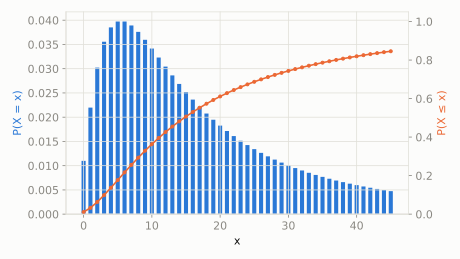

Discrete extended catalog
Beta-Negative-Binomial
scipy.stats.betanbinom
Intuition
Just as beta-binomial adds randomness to the success probability of a binomial count, beta-negative-binomial adds that same randomness to a negative binomial -- counting the number of failures before the n-th success, where the success chance itself varies randomly.
Formula
\[ f(k;n,a,b) = \binom{n+k-1}{k}\frac{B(a+n,b+k)}{B(a,b)}, \quad k=0,1,2,\ldots \]
| parameter | default used here | meaning |
|---|
n | 10 | target number of successes |
a | 2 | shape parameter of the underlying Beta success-probability, alpha |
b | 3 | shape parameter of the underlying Beta success-probability, beta |
Use cases
- Overdispersed count/waiting-time modeling with variable success rates
- Insurance claims frequency modeling with heterogeneous risk
A funny example
A kid keeps flipping a strange coin, collected from a jar of coins with different random biases, until they get 10 heads total. Because the coin's bias itself is a random pick from that jar, the number of tails they rack up along the way follows a beta-negative-binomial distribution.
What's the probability the kid needs exactly 4 extra tails before reaching 10 heads?
Solve it with scipy.stats
import scipy.stats as stats
import numpy as np
dist = stats.betanbinom(n=10, a=2, b=3)
print('P(exactly 4 tails):', round(dist.pmf(4), 4))
print('expected tails:', round(dist.mean(), 4))
P(exactly 4 tails): 0.0385
expected tails: 30.0

Theoretical shape at the default parameters above (blue = density/PMF, orange = CDF).